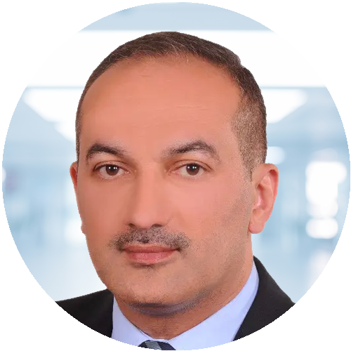
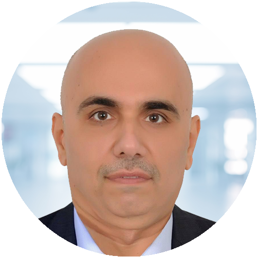

Leadership
Experienced, world-class accountants
AQ

Adnan Al-Qadhi
Co-Founder · CPA
A Certified Public Accountant with over 23 years of experience in auditing and financial advisory. Former Senior Manager at one of the Big Four firms, known for his contribution to developing Iraq’s auditing sector.
FK

Firas Ismail Korban Ali
Co-Founder · CPA
A Certified Public Accountant with over 23 years of experience in auditing and financial consultancy. He holds a Bachelor’s degree in Accounting from Baghdad University (1993) and a CPA license from the Arab Institute of Certified Accountants (1998).
Let’s get started
Be the next success story
Tailored audit and tax solutions for businesses of every size — guidance you can build on.
Get in touch